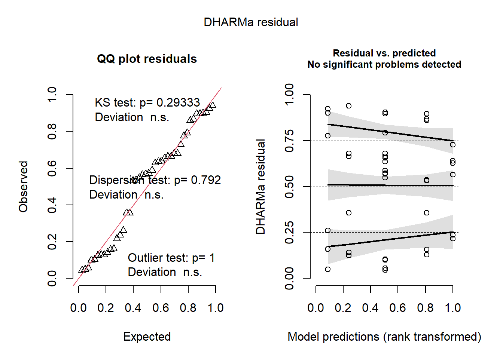
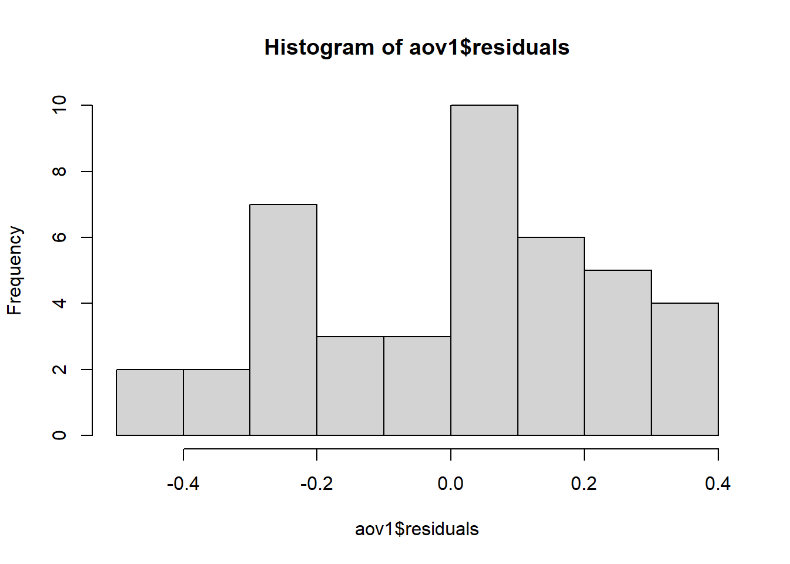

#Ajustar o modelo# <- (atribuiu aov a aov1); ~ (em função de); aov (função ANOVA)aov1 <-aov(tcm ~ especie, data = micelial)summary(aov1)
Df Sum Sq Mean Sq F value Pr(>F)
especie 4 0.4692 0.11729 1.983 0.117
Residuals 37 2.1885 0.05915
#Não há efeito significativo de espécie P=0.117.#Checar as premissas para verificar se o modelo está corretolibrary(performance)check_heteroscedasticity(aov1)
OK: Error variance appears to be homoscedastic (p = 0.175).
#OK: Error variance appears to be homoscedastic (p = 0.175). Significa que as variâncias são homogeneas.check_normality(aov1)
OK: residuals appear as normally distributed (p = 0.074).
#OK: residuals appear as normally distributed (p = 0.074). Significa que a normalidade library(DHARMa)plot(simulateResiduals(aov1))

#Normalidade a direita e variância homogenea a esquerda# teste de normalidadehist(aov1$residuals)

qqnorm(aov1$residuals)qqline(aov1$residuals)
shapiro.test(aov1$residuals)
Shapiro-Wilk normality test
data: aov1$residuals
W = 0.95101, p-value = 0.07022
# criando o objeto insectsinsects <-tbl_df(InsectSprays) |>select(spray, count)insects
# A tibble: 72 × 2
spray count
<fct> <dbl>
1 A 10
2 A 7
3 A 20
4 A 14
5 A 14
6 A 12
7 A 10
8 A 23
9 A 17
10 A 20
# ℹ 62 more rows
#OK: Error variance appears to be homoscedastic (p = 0.175). Significa que as variâncias não são homogeneas, p < 0.05.# nesse caso, recomenda-se transformar os dados para atender as premissas e então utilizar a ANOVA. Se as transformações não atenderem a homocedasticidade, utilizar teste não paramétrico.# alternativa 1: transformar dados originais, se for números. Usar raiz quadrada ou logaritimo# sqrt: raiz quadrada# log: logarítimo. se houver valor zero no "count" somar 0.5.aov2 <-aov(sqrt(count) ~ spray, data = insects)#aov2 <- aov(log(count+0.5) ~ spray, data = insects)summary(aov2)
Df Sum Sq Mean Sq F value Pr(>F)
spray 5 88.44 17.688 44.8 <2e-16 ***
Residuals 66 26.06 0.395
---
Signif. codes: 0 '***' 0.001 '**' 0.01 '*' 0.05 '.' 0.1 ' ' 1
check_heteroscedasticity(aov2)
OK: Error variance appears to be homoscedastic (p = 0.854).
check_normality(aov2)
OK: residuals appear as normally distributed (p = 0.681).
# atenteu as premissaslibrary(emmeans)# médias por inseticida# type = "response": para que a média não seja transformada, o inverso da raizaov2_means <-emmeans(aov2, ~ spray, type ="response")aov2_means
spray response SE df lower.CL upper.CL
A 14.14 1.364 66 11.550 17.00
B 15.03 1.406 66 12.352 17.97
C 1.55 0.452 66 0.779 2.58
D 4.68 0.785 66 3.248 6.38
E 3.27 0.656 66 2.095 4.72
F 16.15 1.458 66 13.370 19.19
Confidence level used: 0.95
Intervals are back-transformed from the sqrt scale
# comparação entre parespwpm(aov2_means)
A B C D E F
A [14.14] 0.9975 <.0001 <.0001 <.0001 0.9145
B -0.116 [15.03] <.0001 <.0001 <.0001 0.9936
C 2.516 2.632 [ 1.55] 0.0081 0.2513 <.0001
D 1.596 1.712 -0.919 [ 4.68] 0.7366 <.0001
E 1.951 2.067 -0.565 0.355 [ 3.27] <.0001
F -0.258 -0.142 -2.774 -1.854 -2.209 [16.15]
Row and column labels: spray
Upper triangle: P values adjust = "tukey"
Diagonal: [Estimates] (response) type = "response"
Lower triangle: Comparisons (estimate) earlier vs. later
# com letraslibrary(multcomp)library(multcompView)cld(aov2_means)
spray response SE df lower.CL upper.CL .group
C 1.55 0.452 66 0.779 2.58 1
E 3.27 0.656 66 2.095 4.72 12
D 4.68 0.785 66 3.248 6.38 2
A 14.14 1.364 66 11.550 17.00 3
B 15.03 1.406 66 12.352 17.97 3
F 16.15 1.458 66 13.370 19.19 3
Confidence level used: 0.95
Intervals are back-transformed from the sqrt scale
Note: contrasts are still on the sqrt scale
P value adjustment: tukey method for comparing a family of 6 estimates
significance level used: alpha = 0.05
NOTE: If two or more means share the same grouping symbol,
then we cannot show them to be different.
But we also did not show them to be the same.
# teste não paramétrico, se não atendeu as premissas da ANOVA mesmo com transformção dos dados.kruskal.test(count ~ spray, data = insects)
Kruskal-Wallis rank sum test
data: count by spray
Kruskal-Wallis chi-squared = 54.691, df = 5, p-value = 1.511e-10
Study: insects$count ~ insects$spray
Kruskal-Wallis test's
Ties or no Ties
Critical Value: 54.69134
Degrees of freedom: 5
Pvalue Chisq : 1.510845e-10
insects$spray, means of the ranks
insects.count r
A 52.16667 12
B 54.83333 12
C 11.45833 12
D 25.58333 12
E 19.33333 12
F 55.62500 12
Post Hoc Analysis
t-Student: 1.996564
Alpha : 0.05
Minimum Significant Difference: 8.462804
Treatments with the same letter are not significantly different.
insects$count groups
F 55.62500 a
B 54.83333 a
A 52.16667 a
D 25.58333 b
E 19.33333 bc
C 11.45833 c
Modelo linear generalizado
Para publicar artigo, o modelo linear é melhor que transformar os dados originais. É mais elegante usar o glm do que transformar os dados.
glm1 <-glm(count ~ spray,data = insects,family =poisson(link ="identity"))# poisson: adequado para dados de contagem. Muito utilizado para nematoide.plot(simulateResiduals(glm1))
# catPred é o mais importantesummary(glm1)
Call:
glm(formula = count ~ spray, family = poisson(link = "identity"),
data = insects)
Coefficients:
Estimate Std. Error z value Pr(>|z|)
(Intercept) 14.5000 1.0992 13.191 < 2e-16 ***
sprayB 0.8333 1.5767 0.529 0.597
sprayC -12.4167 1.1756 -10.562 < 2e-16 ***
sprayD -9.5833 1.2720 -7.534 4.92e-14 ***
sprayE -11.0000 1.2247 -8.981 < 2e-16 ***
sprayF 2.1667 1.6116 1.344 0.179
---
Signif. codes: 0 '***' 0.001 '**' 0.01 '*' 0.05 '.' 0.1 ' ' 1
(Dispersion parameter for poisson family taken to be 1)
Null deviance: 409.041 on 71 degrees of freedom
Residual deviance: 98.329 on 66 degrees of freedom
AIC: 376.59
Number of Fisher Scoring iterations: 3
spray emmean SE df asymp.LCL asymp.UCL .group
C 2.08 0.417 Inf 1.27 2.90 1
E 3.50 0.540 Inf 2.44 4.56 12
D 4.92 0.640 Inf 3.66 6.17 2
A 14.50 1.099 Inf 12.35 16.65 3
B 15.33 1.130 Inf 13.12 17.55 3
F 16.67 1.179 Inf 14.36 18.98 3
Confidence level used: 0.95
P value adjustment: tukey method for comparing a family of 6 estimates
significance level used: alpha = 0.05
NOTE: If two or more means share the same grouping symbol,
then we cannot show them to be different.
But we also did not show them to be the same.